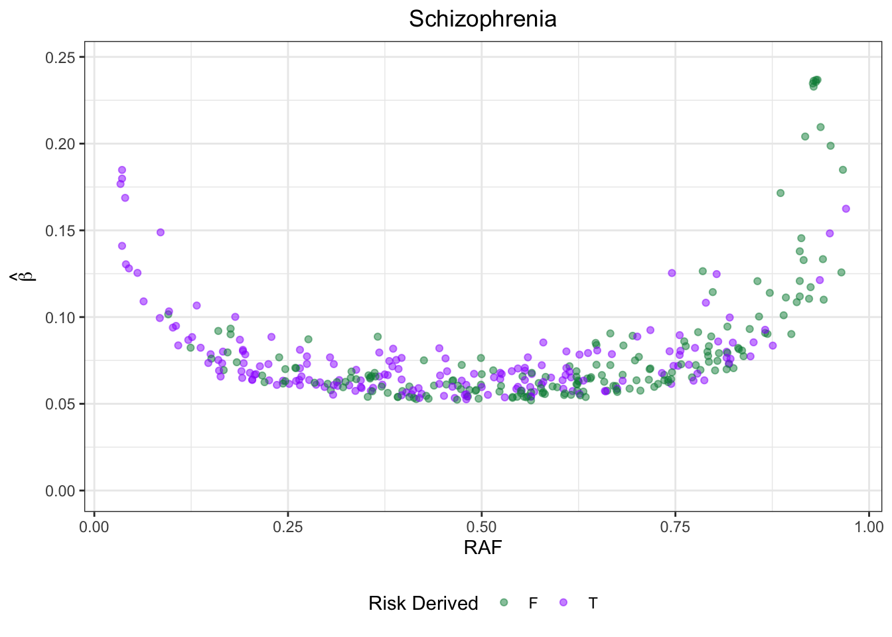
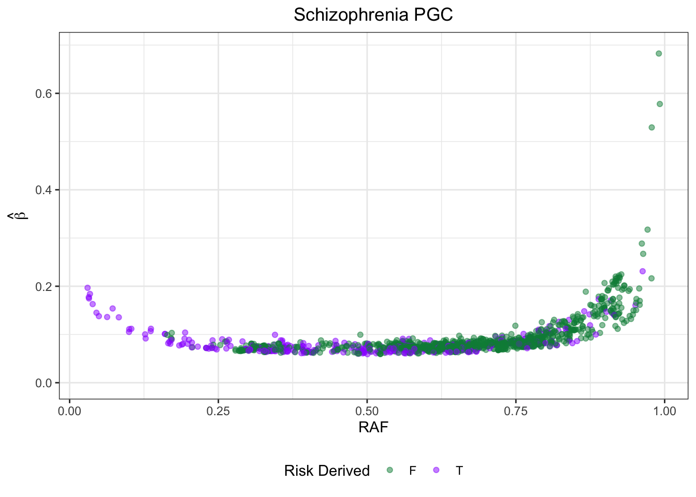
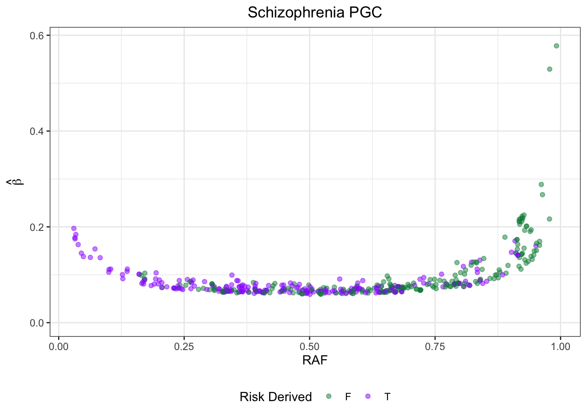

GWAS_ATLAS_results
Jennifer Blanc
1/23/2020
Last updated: 2020-02-11
Checks: 7 0
Knit directory: infer_mutational_bias/analysis/
This reproducible R Markdown analysis was created with workflowr (version 1.4.0). The Checks tab describes the reproducibility checks that were applied when the results were created. The Past versions tab lists the development history.
Great! Since the R Markdown file has been committed to the Git repository, you know the exact version of the code that produced these results.
Great job! The global environment was empty. Objects defined in the global environment can affect the analysis in your R Markdown file in unknown ways. For reproduciblity it’s best to always run the code in an empty environment.
The command set.seed(20191108) was run prior to running the code in the R Markdown file. Setting a seed ensures that any results that rely on randomness, e.g. subsampling or permutations, are reproducible.
Great job! Recording the operating system, R version, and package versions is critical for reproducibility.
Nice! There were no cached chunks for this analysis, so you can be confident that you successfully produced the results during this run.
Great job! Using relative paths to the files within your workflowr project makes it easier to run your code on other machines.
Great! You are using Git for version control. Tracking code development and connecting the code version to the results is critical for reproducibility. The version displayed above was the version of the Git repository at the time these results were generated.
Note that you need to be careful to ensure that all relevant files for the analysis have been committed to Git prior to generating the results (you can use wflow_publish or wflow_git_commit). workflowr only checks the R Markdown file, but you know if there are other scripts or data files that it depends on. Below is the status of the Git repository when the results were generated:
Ignored files:
Ignored: .DS_Store
Ignored: .Rhistory
Ignored: .Rproj.user/
Ignored: .snakemake/conda-archive/
Ignored: .snakemake/conda/
Ignored: .snakemake/locks/
Ignored: .snakemake/shadow/
Ignored: .snakemake/singularity/
Ignored: analysis/.DS_Store
Ignored: code/.DS_Store
Ignored: code/parse_gwas_atlas/.DS_Store
Ignored: data/.ipynb_checkpoints/
Ignored: data/47UKBB/
Ignored: data/BBJ/
Ignored: data/GWAS_ATLAS/
Ignored: data/UKBB/
Ignored: docs/.DS_Store
Ignored: docs/assets/.DS_Store
Ignored: output/.DS_Store
Ignored: output/47UKBB/
Ignored: output/GWAS_ATLAS/
Untracked files:
Untracked: .snakemake/log/2020-01-30T145351.841085.snakemake.log
Untracked: .snakemake/log/2020-01-30T152809.242567.snakemake.log
Untracked: .snakemake/log/2020-01-30T152814.933120.snakemake.log
Untracked: .snakemake/log/2020-01-30T161043.605380.snakemake.log
Untracked: .snakemake/log/2020-01-30T163643.702329.snakemake.log
Untracked: .snakemake/log/2020-01-30T163914.317308.snakemake.log
Untracked: .snakemake/log/2020-01-30T165942.174064.snakemake.log
Untracked: .snakemake/log/2020-01-31T132509.011706.snakemake.log
Untracked: .snakemake/log/2020-01-31T132531.112131.snakemake.log
Untracked: .snakemake/log/2020-01-31T135909.720564.snakemake.log
Untracked: .snakemake/log/2020-01-31T135932.405589.snakemake.log
Untracked: .snakemake/log/2020-01-31T140258.528215.snakemake.log
Untracked: .snakemake/log/2020-01-31T154259.739904.snakemake.log
Untracked: .snakemake/log/2020-01-31T161214.457782.snakemake.log
Untracked: .snakemake/log/2020-02-04T122755.245485.snakemake.log
Untracked: .snakemake/log/2020-02-04T125925.054486.snakemake.log
Untracked: .snakemake/log/2020-02-04T131309.070607.snakemake.log
Untracked: .snakemake/log/2020-02-04T165741.607714.snakemake.log
Untracked: .snakemake/log/2020-02-04T165832.953657.snakemake.log
Untracked: .snakemake/log/2020-02-04T165845.720203.snakemake.log
Untracked: .snakemake/log/2020-02-04T170106.750876.snakemake.log
Untracked: .snakemake/log/2020-02-04T173554.946756.snakemake.log
Untracked: .snakemake/log/2020-02-04T203921.856975.snakemake.log
Untracked: .snakemake/log/2020-02-04T203936.733129.snakemake.log
Untracked: .snakemake/log/2020-02-05T112056.885301.snakemake.log
Untracked: .snakemake/log/2020-02-05T112242.653088.snakemake.log
Untracked: .snakemake/log/2020-02-05T112254.668205.snakemake.log
Untracked: .snakemake/log/2020-02-05T112317.962078.snakemake.log
Untracked: .snakemake/log/2020-02-05T114409.152072.snakemake.log
Untracked: .snakemake/log/2020-02-05T115017.456859.snakemake.log
Untracked: .snakemake/log/2020-02-05T115225.611708.snakemake.log
Untracked: .snakemake/log/2020-02-05T131627.566541.snakemake.log
Untracked: .snakemake/log/2020-02-05T135142.429095.snakemake.log
Untracked: .snakemake/log/2020-02-05T135147.725230.snakemake.log
Untracked: .snakemake/log/2020-02-06T170947.682904.snakemake.log
Untracked: .snakemake/log/2020-02-06T170955.880903.snakemake.log
Untracked: .snakemake/log/2020-02-06T171020.234309.snakemake.log
Untracked: .snakemake/log/2020-02-06T171059.838074.snakemake.log
Untracked: .snakemake/log/2020-02-06T171138.722326.snakemake.log
Untracked: .snakemake/log/2020-02-06T172326.673867.snakemake.log
Untracked: .snakemake/log/2020-02-09T161433.704127.snakemake.log
Untracked: .snakemake/log/2020-02-09T161518.690570.snakemake.log
Untracked: .snakemake/log/2020-02-09T161701.456606.snakemake.log
Untracked: .snakemake/log/2020-02-09T161908.570560.snakemake.log
Untracked: .snakemake/log/2020-02-09T163531.063766.snakemake.log
Untracked: .snakemake/log/2020-02-09T164707.068682.snakemake.log
Untracked: .snakemake/log/2020-02-09T164713.498823.snakemake.log
Untracked: .snakemake/log/2020-02-09T164933.856759.snakemake.log
Untracked: .snakemake/log/2020-02-09T165246.623702.snakemake.log
Untracked: .snakemake/log/2020-02-09T165729.736217.snakemake.log
Untracked: .snakemake/log/2020-02-09T165753.884876.snakemake.log
Untracked: .snakemake/log/2020-02-09T165811.808410.snakemake.log
Untracked: .snakemake/log/2020-02-09T170118.509824.snakemake.log
Untracked: .snakemake/log/2020-02-09T185943.187754.snakemake.log
Untracked: .snakemake/log/2020-02-09T201412.006222.snakemake.log
Untracked: .snakemake/log/2020-02-09T201442.388739.snakemake.log
Untracked: .snakemake/log/2020-02-09T203655.598430.snakemake.log
Untracked: .snakemake/log/2020-02-10T123520.594963.snakemake.log
Untracked: .snakemake/log/2020-02-10T140913.222118.snakemake.log
Untracked: .snakemake/log/2020-02-10T141224.194342.snakemake.log
Untracked: .snakemake/log/2020-02-10T142516.378779.snakemake.log
Untracked: .snakemake/log/2020-02-10T150055.924168.snakemake.log
Untracked: .snakemake/log/2020-02-10T150106.868447.snakemake.log
Untracked: .snakemake/metadata/b3V0cHV0L0JCSi9wYXJzZWRfZ3dhcy9CTUlfMV9wYXJzZWQudHh0
Untracked: .snakemake/metadata/b3V0cHV0L0JCSi9wYXJzZWRfZ3dhcy9IRExfNDdfcGFyc2VkLnR4dA==
Untracked: .snakemake/metadata/b3V0cHV0L0JCSi9wYXJzZWRfZ3dhcy9IYl80OV9wYXJzZWQudHh0
Untracked: .snakemake/metadata/b3V0cHV0L0JCSi9wYXJzZWRfZ3dhcy9IZWlnaHRfMTM1X3BhcnNlZC50eHQ=
Untracked: .snakemake/metadata/b3V0cHV0L0JCSi9wYXJzZWRfZ3dhcy9MRExfNjFfcGFyc2VkLnR4dA==
Untracked: .snakemake/metadata/b3V0cHV0L0JCSi9wYXJzZWRfZ3dhcy9QbHRfOTdfcGFyc2VkLnR4dA==
Untracked: .snakemake/metadata/b3V0cHV0L0JCSi9wYXJzZWRfZ3dhcy9UR18xMDlfcGFyc2VkLnR4dA==
Untracked: .snakemake/metadata/b3V0cHV0L0dXQVNfQVRMQVMvZXZvX2FkZGVkL01TXzI0MDc2NjAyX2V2by50eHQ=
Untracked: .snakemake/metadata/b3V0cHV0L0dXQVNfQVRMQVMvZXZvX2FkZGVkL0FEXzQwOTRfZXZvLnR4dA==
Untracked: .snakemake/metadata/b3V0cHV0L0dXQVNfQVRMQVMvZXZvX2FkZGVkL0FPYXN0aG1hXzQyNjdfZXZvLnR4dA==
Untracked: .snakemake/metadata/b3V0cHV0L0dXQVNfQVRMQVMvZXZvX2FkZGVkL0JNSV80MDc0X2V2by50eHQ=
Untracked: .snakemake/metadata/b3V0cHV0L0dXQVNfQVRMQVMvZXZvX2FkZGVkL0NPYXN0aG1hXzQyNjZfZXZvLnR4dA==
Untracked: .snakemake/metadata/b3V0cHV0L0dXQVNfQVRMQVMvZXZvX2FkZGVkL0VBbWV0YV80MDY2X2V2by50eHQ=
Untracked: .snakemake/metadata/b3V0cHV0L0dXQVNfQVRMQVMvZXZvX2FkZGVkL0VBdWtiYl8zNDA5X2V2by50eHQ=
Untracked: .snakemake/metadata/b3V0cHV0L0dXQVNfQVRMQVMvZXZvX2FkZGVkL0lCRF8yMDMxX2V2by50eHQ=
Untracked: .snakemake/metadata/b3V0cHV0L0dXQVNfQVRMQVMvZXZvX2FkZGVkL1VDXzIwMzBfZXZvLnR4dA==
Untracked: .snakemake/metadata/b3V0cHV0L0dXQVNfQVRMQVMvZXZvX2FkZGVkL215b3BpYV8zNTM5X2V2by50eHQ=
Untracked: .snakemake/metadata/b3V0cHV0L0dXQVNfQVRMQVMvZXZvX2FkZGVkL2JyZWFzdGNhbmNlcl8zNjU5X2V2by50eHQ=
Untracked: .snakemake/metadata/b3V0cHV0L0dXQVNfQVRMQVMvZXZvX2FkZGVkL3BhcmtpbnNvbl80MTY3X2V2by50eHQ=
Untracked: .snakemake/metadata/b3V0cHV0L0dXQVNfQVRMQVMvZXZvX2FkZGVkL3ZpdGlsaWdvXzM4MzJfZXZvLnR4dA==
Untracked: .snakemake/metadata/b3V0cHV0L0dXQVNfQVRMQVMvcGFyc2VkX2d3YXMvQ09hc3RobWFfNDI2Nl9wYXJzZWQudHh0
Untracked: .snakemake/metadata/b3V0cHV0L0dXQVNfQVRMQVMvcGFyc2VkX2d3YXMvQU9hc3RobWFfNDI2N19wYXJzZWQudHh0
Untracked: .snakemake/metadata/b3V0cHV0L0dXQVNfQVRMQVMvcGFyc2VkX2d3YXMvQURfNDA5NF9wYXJzZWQudHh0
Untracked: .snakemake/metadata/b3V0cHV0L0dXQVNfQVRMQVMvcGFyc2VkX2d3YXMvQk1JXzQwNzRfcGFyc2VkLnR4dA==
Untracked: .snakemake/metadata/b3V0cHV0L0dXQVNfQVRMQVMvcGFyc2VkX2d3YXMvRUF1a2JiXzM0MDlfcGFyc2VkLnR4dA==
Untracked: .snakemake/metadata/b3V0cHV0L0dXQVNfQVRMQVMvcGFyc2VkX2d3YXMvRUFtZXRhXzQwNjZfcGFyc2VkLnR4dA==
Untracked: .snakemake/metadata/b3V0cHV0L0dXQVNfQVRMQVMvcGFyc2VkX2d3YXMvSUJEXzIwMzFfcGFyc2VkLnR4dA==
Untracked: .snakemake/metadata/b3V0cHV0L0dXQVNfQVRMQVMvcGFyc2VkX2d3YXMvTVNfMjQwNzY2MDJfcGFyc2VkLnR4dA==
Untracked: .snakemake/metadata/b3V0cHV0L0dXQVNfQVRMQVMvcGFyc2VkX2d3YXMvVUNfMjAzMF9wYXJzZWQudHh0
Untracked: .snakemake/metadata/b3V0cHV0L0dXQVNfQVRMQVMvcGFyc2VkX2d3YXMvbXlvcGlhXzM1MzlfcGFyc2VkLnR4dA==
Untracked: .snakemake/metadata/b3V0cHV0L0dXQVNfQVRMQVMvcGFyc2VkX2d3YXMvcGFya2luc29uXzQxNjdfcGFyc2VkLnR4dA==
Untracked: .snakemake/metadata/b3V0cHV0L1VLQkIvcGFyc2VkX2d3YXMvQk1JXzIzMTA0X3BhcnNlZC50eHQ=
Untracked: .snakemake/metadata/b3V0cHV0L1VLQkIvcGFyc2VkX2d3YXMvSERMXzMwNzYwX3BhcnNlZC50eHQ=
Untracked: .snakemake/metadata/b3V0cHV0L1VLQkIvcGFyc2VkX2d3YXMvSGJfMzAwNTBfcGFyc2VkLnR4dA==
Untracked: .snakemake/metadata/b3V0cHV0L1VLQkIvcGFyc2VkX2d3YXMvSGVpZ2h0XzUwX3BhcnNlZC50eHQ=
Untracked: .snakemake/metadata/b3V0cHV0L1VLQkIvcGFyc2VkX2d3YXMvTERMXzMwNzgwX3BhcnNlZC50eHQ=
Untracked: .snakemake/metadata/b3V0cHV0L1VLQkIvcGFyc2VkX2d3YXMvUGx0XzMwMDgwX3BhcnNlZC50eHQ=
Untracked: .snakemake/metadata/b3V0cHV0L1VLQkIvcGFyc2VkX2d3YXMvVEdfMzA4NzBfcGFyc2VkLnR4dA==
Untracked: analysis/BBJvUKKBB.Rmd
Untracked: code/Neal_UKBB.R
Untracked: code/parse_BBJ/
Untracked: code/parse_gwas_atlas/AD_4094.R
Untracked: code/parse_gwas_atlas/AOasthma_4267.R
Untracked: code/parse_gwas_atlas/BMI_4074.R
Untracked: code/parse_gwas_atlas/COasthma_4266.R
Untracked: code/parse_gwas_atlas/EAmeta_4066.R
Untracked: code/parse_gwas_atlas/EAukbb_3409.R
Untracked: code/parse_gwas_atlas/EAukbb_3509.R
Untracked: code/parse_gwas_atlas/IBD_2031.R
Untracked: code/parse_gwas_atlas/MS_24076602.R
Untracked: code/parse_gwas_atlas/UC_2030.R
Untracked: code/parse_gwas_atlas/myopia_3539.R
Untracked: code/parse_gwas_atlas/myopic_3539.R
Untracked: code/parse_gwas_atlas/parkinson_4167.R
Untracked: output/BBJ/
Untracked: output/UKBB/
Unstaged changes:
Modified: .snakemake/metadata/b3V0cHV0L0dXQVNfQVRMQVMvcGFyc2VkX2d3YXMvYnJlYXN0Y2FuY2VyXzM2NTlfcGFyc2VkLnR4dA==
Modified: .snakemake/metadata/b3V0cHV0L0dXQVNfQVRMQVMvcGFyc2VkX2d3YXMvdml0aWxpZ29fMzgzMl9wYXJzZWQudHh0
Deleted: code/#get_evolutionary_information_from_1kg_GWAS_ATLAS.py#
Modified: code/.ipynb_checkpoints/Untitled-checkpoint.ipynb
Modified: code/Untitled.ipynb
Modified: code/get_evolutionary_information_from_1kg_GWAS_ATLAS.py
Modified: code/get_evolutionary_information_from_1kg_GWAS_ATLAS.py~
Modified: code/parse_gwas_atlas/vitiligo_3832.R
Modified: snakefile
Modified: snakefile~
Note that any generated files, e.g. HTML, png, CSS, etc., are not included in this status report because it is ok for generated content to have uncommitted changes.
These are the previous versions of the R Markdown and HTML files. If you’ve configured a remote Git repository (see ?wflow_git_remote), click on the hyperlinks in the table below to view them.
| File | Version | Author | Date | Message |
|---|---|---|---|---|
| Rmd | d7244a2 | jgblanc | 2020-02-11 | Added Median Plot |
| html | 0ec351c | jgblanc | 2020-02-03 | Build site. |
| Rmd | 9134df6 | jgblanc | 2020-02-03 | added more GWAS |
| Rmd | ae228f8 | jgblanc | 2020-01-30 | parsing GWAS atlas |
| html | eb46920 | jgblanc | 2020-01-24 | Build site. |
| html | 75fc4f0 | jgblanc | 2020-01-24 | Build site. |
| html | f507bb5 | jgblanc | 2020-01-24 | Build site. |
| html | 7694f8a | jgblanc | 2020-01-24 | Build site. |
| Rmd | e9fc5ca | jgblanc | 2020-01-24 | Start of GWAS atlas analysis |
library(data.table)
library(ggplot2)
library(ggpubr)Loading required package: magrittrlibrary(latex2exp)
library(dplyr)
Attaching package: 'dplyr'The following objects are masked from 'package:data.table':
between, first, lastThe following objects are masked from 'package:stats':
filter, lagThe following objects are masked from 'package:base':
intersect, setdiff, setequal, uniongetwd()[1] "/Users/jenniferblanc/infer_mutational_bias/analysis"Intro
Write overview
Results
Schizophrenia 
[1] 0.5755149Schizophrenia - Psychiatric Genomic Consortium 
[1] 0.6456232Schizophrenia EAS

[1] 0.5034015Chronic Kidney Disease 
[1] 0.4647463Atrial Fibrilation 
[1] 0.4304269Type 2 Diabetes 
| Version | Author | Date |
|---|---|---|
| 0ec351c | jgblanc | 2020-02-03 |
[1] 0.5154908Crohns 
| Version | Author | Date |
|---|---|---|
| 0ec351c | jgblanc | 2020-02-03 |
[1] 0.4607642Breast Cancer 
| Version | Author | Date |
|---|---|---|
| 0ec351c | jgblanc | 2020-02-03 |
[1] 0.3836395Alzheimer’s 
| Version | Author | Date |
|---|---|---|
| 0ec351c | jgblanc | 2020-02-03 |
[1] 0.4657562Parkinson 
| Version | Author | Date |
|---|---|---|
| 0ec351c | jgblanc | 2020-02-03 |
[1] 0.6517214IBD 
| Version | Author | Date |
|---|---|---|
| 0ec351c | jgblanc | 2020-02-03 |
[1] 0.445817Ulcerativ Colitis
| Version | Author | Date |
|---|---|---|
| 0ec351c | jgblanc | 2020-02-03 |
[1] 0.4450994Childhood Onset Asthma 
[1] 0.5028729Adult Onset Asthma 
[1] 0.5648415Multiple Sclerosis 
[1] 0.5984474Myopia 
[1] 0.4810731Educational Attainment - UKBB only 
[1] 0.5214631Educational Attainment - meta-analysis 
[1] 0.5057544Educational Attainment - meta-analysis 
[1] 0.4906255Median RAF

sessionInfo()R version 3.5.1 (2018-07-02)
Platform: x86_64-apple-darwin15.6.0 (64-bit)
Running under: macOS High Sierra 10.13.6
Matrix products: default
BLAS: /Library/Frameworks/R.framework/Versions/3.5/Resources/lib/libRblas.0.dylib
LAPACK: /Library/Frameworks/R.framework/Versions/3.5/Resources/lib/libRlapack.dylib
locale:
[1] en_US.UTF-8/en_US.UTF-8/en_US.UTF-8/C/en_US.UTF-8/en_US.UTF-8
attached base packages:
[1] stats graphics grDevices utils datasets methods base
other attached packages:
[1] dplyr_0.8.1 latex2exp_0.4.0 ggpubr_0.2 magrittr_1.5
[5] ggplot2_3.2.1 data.table_1.12.2
loaded via a namespace (and not attached):
[1] Rcpp_1.0.3 compiler_3.5.1 pillar_1.4.2 git2r_0.25.2
[5] workflowr_1.4.0 tools_3.5.1 digest_0.6.22 evaluate_0.14
[9] lifecycle_0.1.0 tibble_2.1.3 gtable_0.3.0 pkgconfig_2.0.3
[13] rlang_0.4.1 yaml_2.2.0 xfun_0.7 withr_2.1.2
[17] stringr_1.4.0 knitr_1.23 fs_1.3.1 cowplot_0.9.4
[21] rprojroot_1.3-2 grid_3.5.1 tidyselect_0.2.5 glue_1.3.1
[25] R6_2.4.1 rmarkdown_1.13 farver_2.0.1 purrr_0.3.2
[29] whisker_0.3-2 backports_1.1.5 scales_1.1.0 htmltools_0.3.6
[33] assertthat_0.2.1 colorspace_1.4-1 labeling_0.3 stringi_1.4.3
[37] lazyeval_0.2.2 munsell_0.5.0 crayon_1.3.4